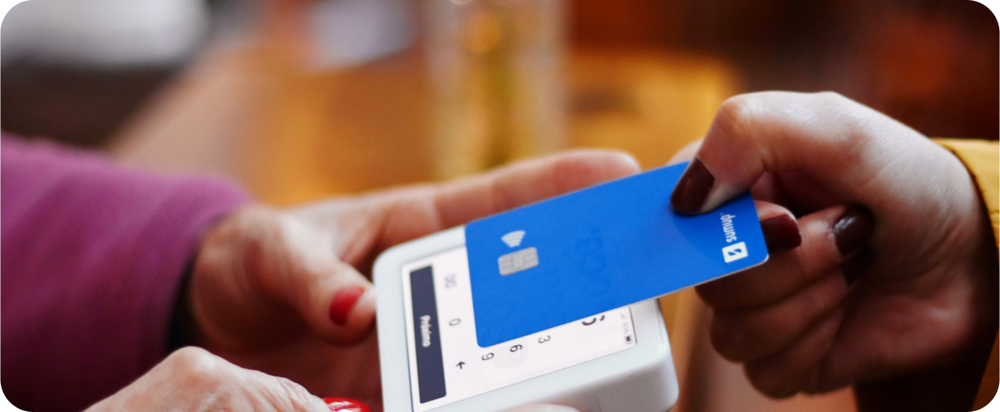
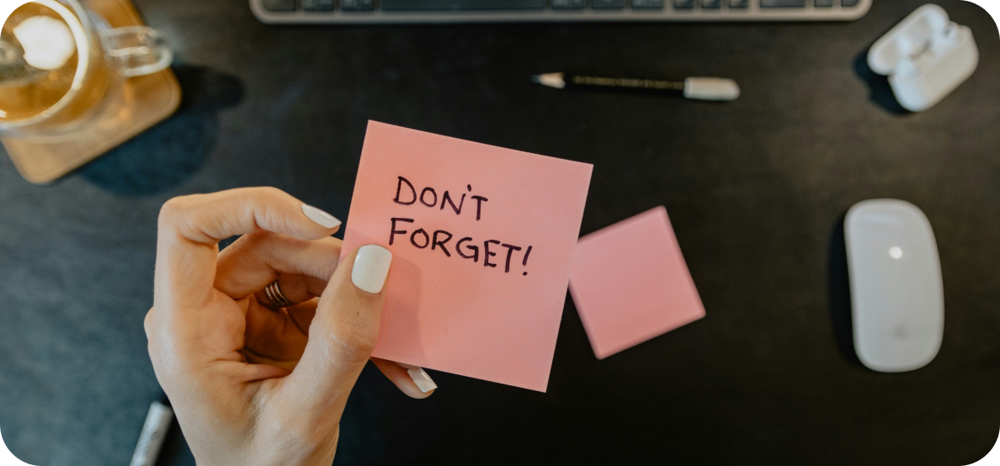
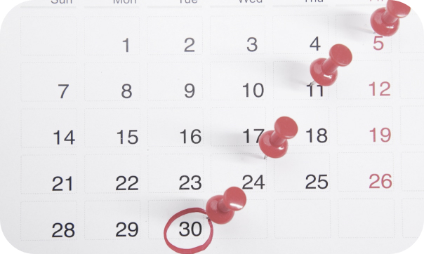
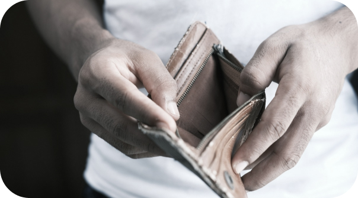
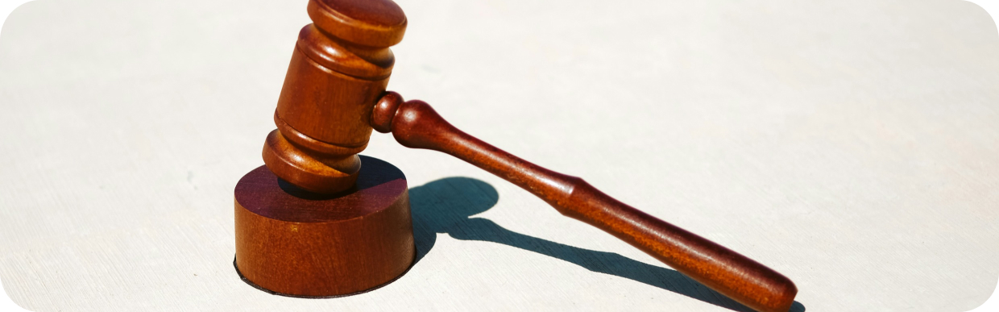

How to Handle Unpaid Invoices and Late Payments
March, 18
Handling unpaid invoices and late payments is a common challenge for many businesses, but there are steps you can take to address these issues effectively. Here's a concise guide on how to handle unpaid invoices and late payments:
Send Reminders: Start by sending friendly reminders to the client about the outstanding invoice. Politely remind them of the payment terms and the amount owed.
Follow Up with Phone Calls: If reminders don't yield results, follow up with phone calls to discuss the overdue payment directly. Maintain a professional and courteous tone while emphasizing the importance of timely payment.
Offer Payment Plans: Consider offering payment plans or alternative payment options to clients facing financial difficulties. This can help facilitate payment while maintaining the business relationship.
Implement Late Payment Fees: Clearly outline late payment fees in your invoicing terms and conditions. Charging late fees can incentivize clients to pay on time and compensate you for the inconvenience.
Escalate the Matter: If all attempts to collect payment fail, consider escalating the matter by involving a collections agency or pursuing legal action. Be sure to review the terms of your contract and consult with legal counsel if necessary.
Maintain Communication: Throughout the process, maintain open communication with the client to keep them informed of the situation and any actions you're taking to resolve it. Transparency can help preserve the business relationship and encourage cooperation.
By implementing these strategies, businesses can improve their chances of collecting unpaid invoices and minimizing the impact of late payments on their cash flow and overall financial health.